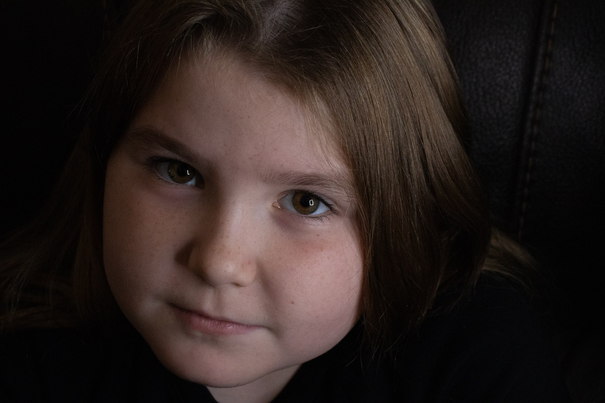
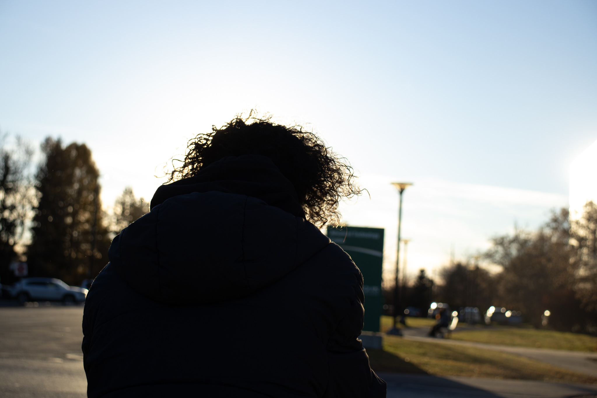

Hi, I’m Chloe Ann Erhardt! Welcome to my creative corner of the web! This portfolio is more than just a collection of work; it’s a journey through my passion for Photography, Digital Graphics, and UX Design. Each project tells a story — blending visuals and user experience to create meaningful, memorable moments.
From capturing fleeting emotions through my lens to crafting intuitive digital experiences, I thrive on turning ideas into engaging realities. Whether it’s a bold graphic, a seamless app flow, or a stunning photo, my goal is to connect, inspire, and solve problems with creativity and precision.
Dive in and explore how I blend art and technology to bring concepts to life. Let’s make something extraordinary together.
Photography
On the Ice – Capturing my brother’s first time playing goalie presented the challenge of freezing fast action with clarity.
Using a high shutter speed and close framing, I conveyed his focus and readiness in this moment.
The photo received positive feedback for its emotional impact and sharp detail.

A crisp portrait focusing on natural lighting and texture.
The challenge was to balance exposure to highlight subtle details without losing softness.
Achieved a warm, inviting portrait that resonated well with viewers.

Silhouette – Creating a dramatic figure outlined against a glowing sunset backdrop required precise timing and composition.
I used backlighting and manual exposure adjustments to capture the striking contrast.
This image became a favorite for its mood and storytelling quality.
An expressive portrait blending motion blur with sharp detail.
The technical challenge was combining slow shutter speed with subject focus, accomplished through experimental shooting.
Resulted in a dynamic image that conveys movement and emotion.
A candid picture of my dog capturing personality and warmth.
The goal was to shoot in natural light without disturbing the moment.
Achieved a natural, heartfelt image appreciated by family and friends.
A close-up of a crispy golden leaf emphasizing texture and autumn colors.
The challenge was focusing on fine details with shallow depth of field.
Created a vivid, textured photo that highlights seasonal beauty.
Digital Graphics
Designed a bold and clean logo for my brother’s hockey team with the goal of reflecting team spirit and unity.
I focused on simple shapes and strong colors to create a memorable mark.
The logo was well received and is now used on jerseys and promotional materials.
Created a colorful, layered design blending abstract textures and shapes for a Digital Graphics class project.
The challenge was balancing complexity with visual harmony, achieved through iterative refinement.
The piece was praised for its vibrant composition and creativity.
Platypus Shark – Designed a playful and imaginative creature merging unexpected elements.
The goal was to experiment with form and storytelling through illustration techniques.
This concept piece sparked interest for its originality and whimsical nature.
UX Design
Developed a moodboard for CFUW Ottawa to establish a cohesive design direction.
The challenge was aligning visuals with client values and audience expectations.
This moodboard was approved and guided all subsequent design work.
Created a high-fidelity mobile app mockup emphasizing clean layouts and usability.
The project goal was to simplify navigation and improve user experience.
Received positive feedback for clarity and modern aesthetic.
Designed a detailed user persona to guide design decisions and enhance user empathy.
The challenge was synthesizing research into a clear, actionable profile.
This persona helped focus design goals and improve overall usability.